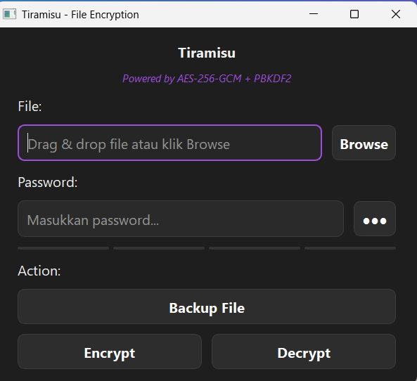
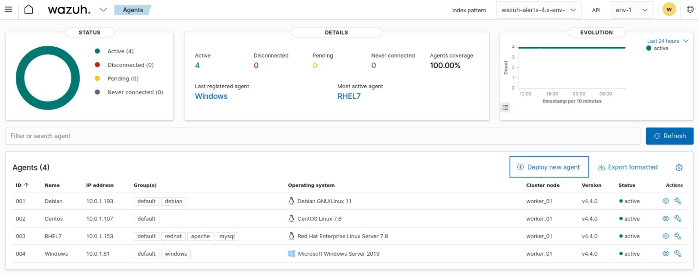

Pernah membuat video cinematic
lihat disiniVideo cinematic ini saya buat untuk SMA Nizam Al-Mulk, sekaligus ini adalah projek pertama saya sebagai desain grafis dan juga videografi.
Pernah membuat beberapa poster dan banner
lihat disiniPoster ini dibuat untuk memperingati hari kartini, dan ini adalah salah satu posternya.
Pernah membuat tools kriptografi pada saat Mini PBL

Projek ini adalah hasil dari mini PBL kami dengan membuat tools kriptografi.
Pernah membuat sistem monitoring

Projek ini adalah salah satu potongan gambar projek kami untuk memonitoring komputer.